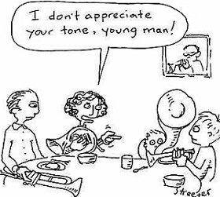

Irony
Irony is the expression of one's meaning by using language that normally signifies the opposite, typically for humorous or emphatic effect. It may be divided into categories such as verbal, dramatic, and situational. Verbal, dramatic, and situational irony are often used for emphasis in the assertion of a truth.
Examples:
Verbal: A man looked out of the window to see the storm intensify. He turned to his friend and said “wonderful weather we’re having!”
Dramatic: In Romeo and Juliet, the former thinks Juliet is dead, but the audience know that she only took a sleeping potion.
Situational: A traffic cop got his license suspended due to unpaid tickets.